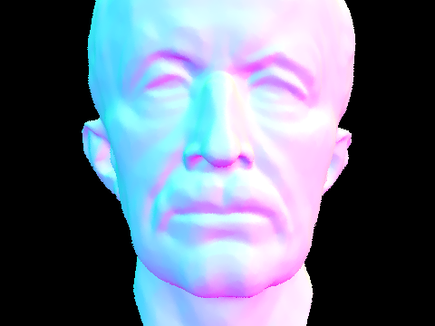
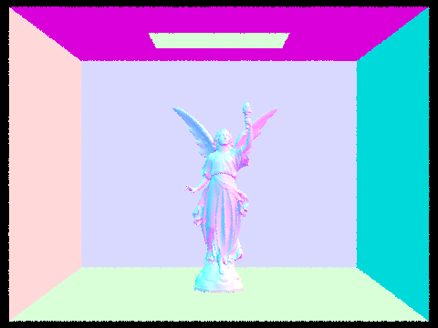
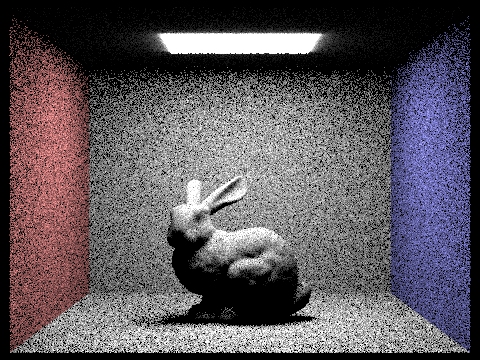
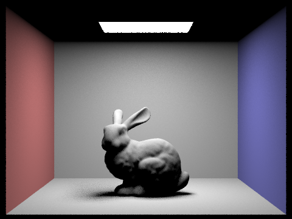
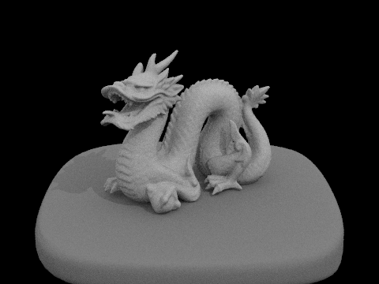
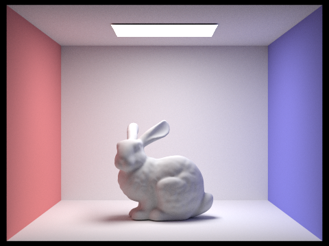
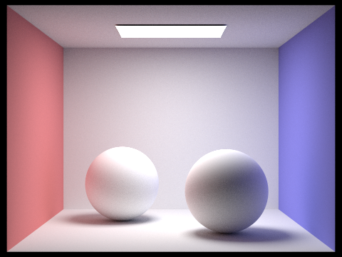
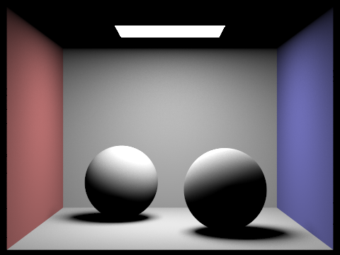
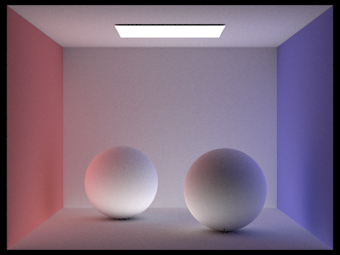

In this project, we implemented some basic ray-tracing algorithms for rendering lighting in various scenes. Some parts of this include ray intersection calculations, acceleration data structures and algorithms, and more. Our approach to implementing the different parts of this project was to follow the slides and algorithms presented in class, while also integrating the syntax and project structure presented in the existing starter code. Some problems we encoutered were blank or missing components in our render, which were usually caused by missing intersections. We also encountered instances of scenes being too bright or too dim, which often was a result of incorrect constant scaling factors. As we discovered the different types of errors we could encounter, it became easier to debug later parts of the project, as we had a better idea of where errors in our code were probably arising.
Part 1: Ray Generation and Scene Intersection
Ray generation consists of taking a pixel location and converting it to camera coordinates. This gives us a ray in camera space, which is converted to world space. The world space ray is tested for intersection with primitive shapes in the image, including triangles and spheres. Using this intersection information, we can determine where the light being sent to the camera is originating, and we can take samples from multiple rays to estimate a pixel color. For triangle intersections, we implemented Moller Trumbore. This algorithm uses various dot products and cross products to calculate the intersection t and barycentric coefficients given the triangle points, the ray origin, and ray direction. We then check if the t value is positive and lies within the min/max bounds of the ray.
|
|

|

|
Part 2: Bounding Volume Heirarchy
Our BVH construction algorithm is as follows: First, iterate from the start to end iterator, constructing a bounding box for the primitives list and counting the number of primitives.
If there are at most max_leaf_size primitives, then we are at a leaf node, so set the iterators and child pointers and return the new BVHNode.
Otherwise, split the primitives list as follows: First, find the longest axis of the bounding box by checking its extent.
Then, find the median of the primitive centroids along the longest axis using the std::nth_element function.
Finally, split the existing iterators using the std::partition function, comparing in relation to the median along the longest axis.
If one side of the split is empty, then simply increment or decrement the split iterator as needed.
Finally, build the left and right BVHNodes recursively using the split list of primitives and return the final BVHNode.
|  |  |
| Cow | Beetle | |
| No BVH | 22.89s | 29.21s |
| With BVH | 0.0079s | 0.0075s |
As we can see, BVH acceleration provides for a significant speedup in rendering time. As noted in the project spec, even a simple BVH construction can reduce ray tracing complexity from linear to logarithmic time. This is because of the underlying tree structure of BVH's. If a given ray does not intersect the bounding box of an internal node, then it can prune away all the child nodes, with all the primitives in the leaves on that side of the tree, from future intersection checks. Thus, ray tracing time becomes proportional to the depth of the BVH tree, which is simply O(log(n)).
Part 3: Direct Illumination
The first direct lighting function is uniform hemisphere sampling. Here, for a given intersection, we estimate the integral over all rays out of the hemisphere surrounding the intersection point.
This is done using the Monte Carlo estimator and assuming that the probability of the ray going through any point on the hemisphere is uniform.
For each sample, we cast a test ray from intersection point hit_p in a direction out of the hemisphere, checking for an intersection by that ray.
If there is an intersection, the estimator term for that sample is calculated as the product of: f, the reflection from the sample ray direction towards the camera; Li, the emission from the intersected object; and cosj, the angle from the normal of the intersection to the sampled direction.
We return the sum of all sample points, multipled by a constant factor of 2π/num_samples, since the surface area of the hemisphere is 2π.
The second direct lighting function is importance sampling done by sampling the light sources in the image. Now, we iterate over all light sources in the scene, and sample uniformly within each light source.
If a point source is reached, we only sample once. Otherwise, we take ns_area_light samples per light source, with the sample direction being drawn uniformly across the area of the light source.
Since we are only sampling from the light source, we want to check if the ray intersects with any objects before the light.
If there is no intersection, then we can calculate the estimator term as the product of: f, the reflection from the sample ray direction towards the camera; Li, the radiance from the sampled light source; and cosj, the angle from the normal of the intrsection to the sampled direction.
Since we want each light source to be weighted equally in our estimator, we first calculate the contribution of the light source individually by dividing by the number of samples over the light source.
Then, we sum each of the individual terms and divide by the total number of light sources in the scene.
|  |  |

|

|
|
|
|
|
|
|
Overall, we can see that uniform hemisphere sampling performs better than lighting sampling in almost all scenarios. As shown in the first table, with the same number of light and pixel samples, lighting sampling converges much and has much less noise compared to hemisphere sampling. Notably, in the dragon geometry, hemisphere sampling is not even able to render the object at a detectable brightness, since most samples in the hemisphere miss the light source. We also see that lighting sampling converges very quickly, with the bunny scene at 64 rays having very little detectable noise. In contrast, the render at 64 rays using hemisphere sampling still has significant noise.
Part 4: Global Illumination
For the indirect lighting function, we first add the one-bounce radiance. Then, we generate a random incident direction from the intersection and convert to a ray in world coordinates. Then, we calculate the closest intersection of this ray. If there is an intersection and depth of the ray is less than the max depth and greater than 1 (for max ray depth > 1, we use at least one indirect ray), we flip a coin for russian roulette and recurse with probability 0.65. We calculate the at least once bounce radiance with the new ray and intersection, and multiply by the reflectance of this ray and by cos theta, then divide by the sampled pdf and the continuation probability and add that to the one bounce radiance.
|  |  |
|

|
|

|
Part 5: Adaptive Sampling
Collaboration
For collaboration, we found that splitting the project up by parts was effective for us. However, this doesn't mean we were working on each part independently. Rather, since each part of the project typically had some dependency on a different part, we first made sure we understood the big idea of each part. This served a two-fold purpose. First, when working on the sections individually we had a better idea of what would be/had been implemented in a different part. Secondly, having an understanding of the other member's task allowed us to do code reviews, lending fresh eyes to each others' code when we found ourselves stuck on a stubborn bug. On another note, since this project was much larger than previous ones, we had to devise a way to effectively version control, and started using branches for each part, communicating when branches were tested/ready to be merged into the master branch.